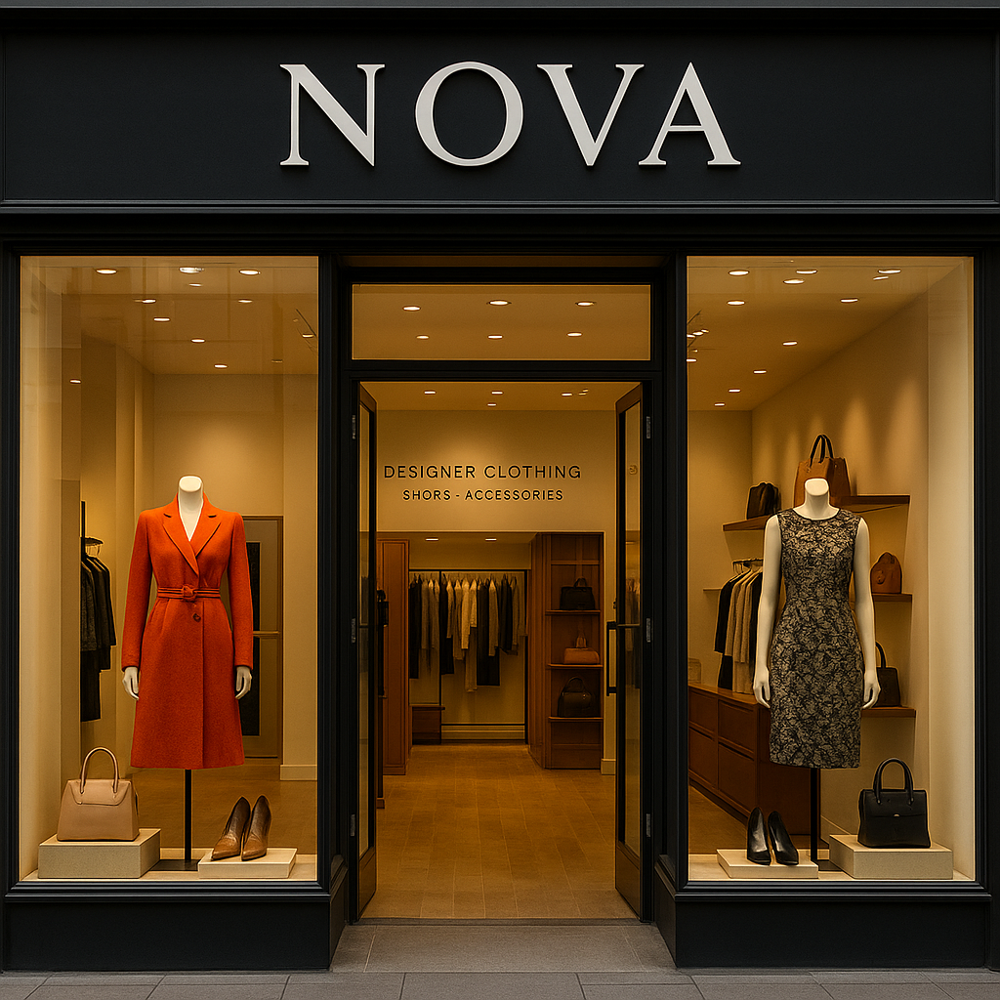

Arise is a distributor of Pharmaceutical Products across different countries:Canada, Australia ,USA,UK ,France and Germany.
The company faces challenges in optimizing sales performance, managing inventory efficiently, and identifying key market opportunities. The company serves a diverse healthcare sector, ensuring the availability of essential medications. However, inefficiencies in demand forecasting, stock management, and customer engagement strategies have impacted operational effectiveness.
The aim of this projects is to conduct an in-depth analysis of consumers and pharmaceutical products across different dimensions and segments in order to track sales performance and support strategic business decision making. Using PowerBI Visualization Tool

Arise is a distributor of Pharmaceutical Products across different countries:Canada, Australia ,USA,UK ,France and Germany. The company faces challenges in optimizing sales performance, managing inventory efficiently, and identifying key market opportunities. The company serves a diverse healthcare sector, ensuring the availability of essential medications. However, inefficiencies in demand forecasting, stock management, and customer engagement strategies have impacted operational effectiveness. The aim of this projects is to conduct an in-depth analysis of consumers and pharmaceutical products across different dimensions and segments in order to track sales performance and support strategic business decision making. Using PowerBI Visualization Tool.

Yummy Bites Café is an emerging and innovative café chain specializing in a diverse range of beverages, snacks, and light meals. Over the past year, the organization experienced significant growth. This project analyzed and optimized the sales performance of Yummy Bites multiple café branches. I successfully identified key operational challenges, examined branch-specific customer demographics,and implemented data-driven strategies that enabled scalable growth and improved customer satisfaction across all locations.

JOE M Retail Group is a multinational consumer goods company operating across North America, Europe, and Asia. With a diverse product portfolio and a wide-ranging customer base—including government, enterprise, midmarket, and small business segments—the company experienced rapid expansion over the past two years.
As part of a data-driven transformation project, I conducted an in-depth analysis to improve business decision-making accuracy by reducing reliance on assumptions and outdated reports. Through this analysis, I uncovered key performance trends across regions, products, and sales teams. These insights enabled the organization to realign resources and efforts toward high-return areas, improve revenue forecasting, identify underperforming markets, and optimize pricing strategies, product focus, and team deployment for sustainable growth.

Nova is a luxury fashion boutique with branches in multiple cities, offering curated designer clothing, shoes, and accessories. While the brand is well-known for its personalized shopping experience, it faced growing challenges in tracking sales performance and extracting insights from its expanding data. I developed this project using data-driven methods to bridge that gap. I analyzed Nova’s sales data to uncover patterns in product performance, customer segments, and seasonal trends. Using the Power BI tool, I created interactive dashboards that gave the team clear visibility into branch-level performance, top-selling items, and underperforming inventory.The insights enabled Nova to optimize inventory planning, personalize marketing efforts, and make faster, more informed business decisions. By transforming raw data into actionable intelligence, the boutique gained a competitive edge in the high-end retail market.